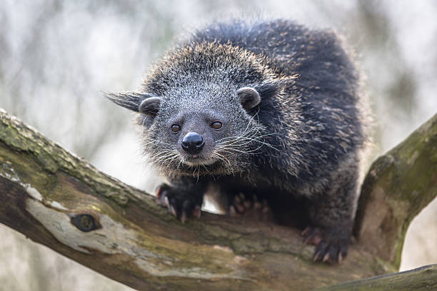

What is a binturong?

The binturong (Arctictis binturong) is a tree-dwelling mammal native to South and Southeast Asia. It is sometimes called a bearcat, even though it is not a bear or a cat. Binturongs belong to the Viverridae family, which also includes civets.
Why they stand out
Binturongs have long, shaggy coats, large whiskers, rounded ears, and a strong prehensile tail that helps them move through trees. They are also famous for a scent that many people compare to buttered popcorn.
Although they are members of the order Carnivora, fruit makes up a large part of their diet. By eating fruit and spreading seeds, binturongs can help support the forests where they live.
Quick facts
A few basics to know before exploring the rest of the site.
- Scientific name: Arctictis binturong
- Family: Viverridae
- Range: South and Southeast Asia
- Lifestyle: Mostly arboreal and mostly active at night
- Diet: Mainly fruit, plus some small animals, eggs, and other foods
Featured fact
Binturongs use scent to communicate with other binturongs.
Explore the site
Use the navigation above to learn about binturong appearance and adaptations, their forest habitat and diet, and the conservation challenges they face in the wild.